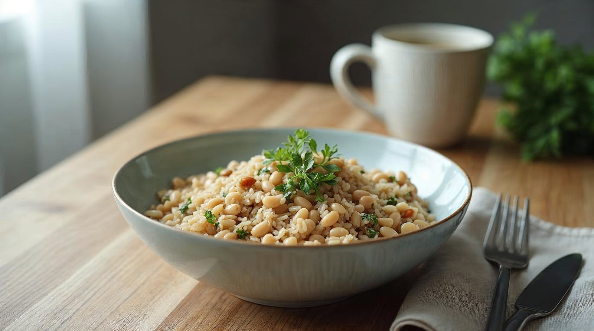
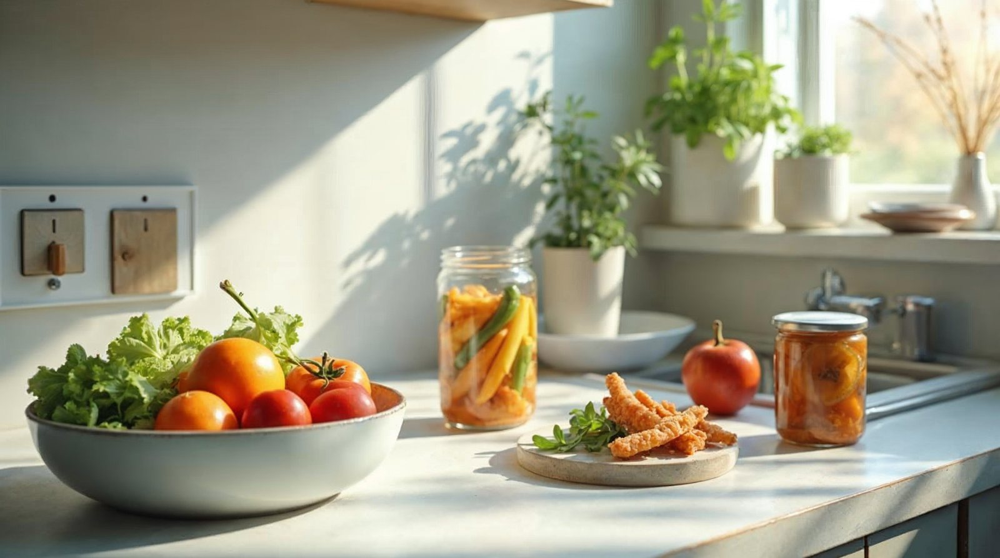
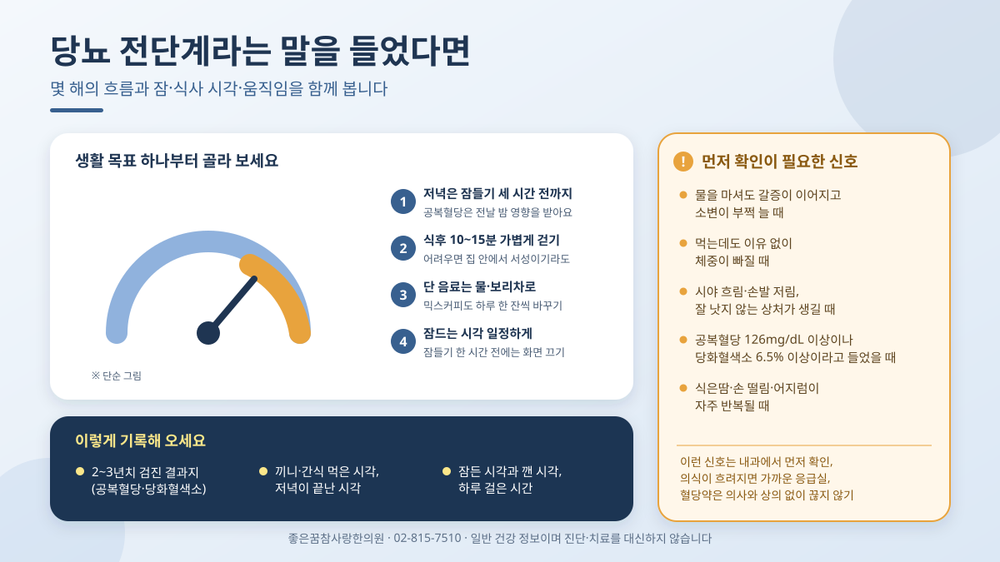

이종호 한의사 감수좋은꿈참사랑한의원 대표원장 (한의사 면허번호 19769)발행 2026-11-26 · 수정 2026-11-26
이 글의 차례
검진 결과지를 넘기다 '공복혈당장애'라는 낯선 말에서 손이 멈춥니다. 옆에는 작은 글씨로 '당뇨 전단계, 생활습관 개선 필요'라고 적혀 있습니다. 아픈 데는 하나도 없는데, 그날 저녁 밥 한 숟가락을 뜨면서도 괜히 마음이 쓰입니다.
당뇨 전단계는 혈당이 정상보다는 높지만 아직 당뇨 진단 기준에는 닿지 않은 상태를 말합니다. 병이 시작되었다는 선고라기보다, 몸이 미리 보내 준 안내문에 가깝습니다. 저는 이때 숫자 하나보다 몇 해의 흐름과 잠, 식사 시각, 움직임을 함께 봅니다.
다만 물을 마셔도 계속 목이 마르고, 소변이 부쩍 잦아지고, 먹는데도 체중이 빠진다면 이야기가 다릅니다. 그런 신호가 있다면 이 글보다 내과 진료가 먼저입니다.
진료실에서 이런 말씀을 자주 듣습니다. "부모님이 당뇨라 저도 결국 그렇게 되는 건가 싶어요." 또 어떤 분은 반대로 "아직 당뇨는 아니라니까 괜찮은 거죠?" 하고 웃으십니다. 두 마음 모두 이해가 됩니다.
한쪽은 너무 무겁고, 한쪽은 너무 가볍습니다. 저는 그 사이 어딘가에 서 보시면 좋겠습니다. 겁먹을 일은 아니지만, 그냥 넘기기에는 아까운 때라고요. 지금까지 바쁘게 지내 오신 하루를 한 번 같이 펼쳐 보는 기회로 삼으셨으면 합니다.
왜 혈당이 조금씩 올라갈까요
밥을 먹으면 혈당이 오르고, 몸은 인슐린이라는 호르몬을 내어 그 당을 근육과 간으로 들여보냅니다. 젊을 때는 이 일이 조용히 잘 돌아갑니다. 그런데 뱃살이 늘고, 덜 움직이고, 잠이 짧아지는 날이 쌓이면 같은 인슐린에도 몸이 덜 반응하게 됩니다.
이것을 흔히 인슐린 저항성이라고 부릅니다. 문을 두드려도 잘 열리지 않으니 몸은 인슐린을 더 많이 내어 버팁니다. 한동안은 그렇게 버티며 숫자가 크게 흔들리지 않다가, 어느 해 검진에서 공복혈당이 조금 높게 찍히기 시작하는 경우가 많습니다.
저는 이 과정을 몸이 오래 버텨 온 흔적이라고 생각합니다. 공복혈당이 오른 해보다 훨씬 전부터 몸은 늦은 저녁과 짧은 잠, 앉아만 있던 날들을 묵묵히 받아내고 있었던 셈이지요. 그래서 숫자를 탓하기보다 그 하루를 같이 들여다보고 싶습니다.
마음의 긴장도 숫자에 묻어납니다. 긴장이 길게 이어지거나 잠이 모자라면 몸은 혈당을 끌어올리는 호르몬을 더 내보내며 버티려 합니다. 바쁜 시기에 검진을 받았더니 숫자가 올랐다는 말씀이 아주 근거 없는 이야기는 아닌 셈입니다.
한의학에서도 갈증이 잦고 많이 먹고 소변이 많아지는 모습을 소갈(消渴)이라 부르며 오래전부터 살펴 왔습니다. 다만 당뇨 전단계는 대개 아무 증상이 없습니다. 증상이 없을 때 알아챈 것이 오히려 다행인 이유입니다.
결과지의 세 가지 숫자, 이렇게 나눠 봅니다
당뇨 전단계를 말할 때 보는 숫자는 주로 세 가지입니다. 결과지에 모두 있지 않을 수 있고, 기준은 지침에 따라 조금씩 다를 수 있으니 검진 기관과 내과의 설명을 우선하세요.
공복혈당: 아침 빈속의 숫자
8시간 이상 굶은 뒤 잰 혈당입니다. 흔히 쓰는 기준으로 100mg/dL 미만이면 정상, 100~125mg/dL이면 공복혈당장애, 126mg/dL 이상이 다시 확인되면 당뇨를 의심합니다. 결과지의 '공복혈당장애'가 바로 이 가운데 구간입니다.
공복혈당은 전날 밤의 영향을 많이 받습니다. 늦게까지 술을 마셨거나, 잠을 설쳤거나, 검사장까지 서둘러 왔다면 평소보다 높게 나올 수 있습니다. 그래서 한 번의 숫자로 놀라기보다 같은 조건에서 다시 재 보는 쪽을 권합니다.
당화혈색소: 두세 달의 평균
당화혈색소(HbA1c)는 적혈구에 당이 얼마나 붙어 있는지를 보는 숫자로, 지난 두세 달 혈당의 평균을 짐작하게 해 줍니다. 흔히 5.7% 미만을 정상, 5.7~6.4%를 당뇨 전단계, 6.5% 이상을 당뇨 기준으로 봅니다.
전날 한 끼에 크게 흔들리지 않는다는 점이 장점입니다. 다만 빈혈이 있거나 신장 질환 등이 있으면 실제 혈당과 다르게 나올 수 있어, 공복혈당과 함께 놓고 읽습니다. 수치의 뜻은 당화혈색소(HbA1c) 수치는 무엇을 뜻하나요?에 따로 정리해 두었습니다.
식후 혈당과 경구당부하검사
공복혈당이 정상이어도 식후에 혈당이 높게 오르는 분이 있습니다. 내과에서는 포도당 용액을 마시고 두 시간 뒤 혈당을 재는 경구당부하검사로 이를 확인하기도 합니다. 140~199mg/dL이면 내당능장애라고 부르며, 이것도 당뇨 전단계에 들어갑니다.
세 숫자 가운데 하나만 걸린 분도, 둘 이상 걸린 분도 있습니다. 어느 쪽인지에 따라 생활에서 먼저 손볼 곳이 조금 달라집니다. 아침 숫자가 높으면 저녁과 밤을, 식후 숫자가 높으면 식사 구성과 식후 움직임을 먼저 봅니다.

당뇨, 저혈당, 갑상선과는 어떻게 다를까요
당뇨 전단계는 증상이 없는 경우가 대부분입니다. 반대로 갈증과 잦은 소변, 이유 없는 체중 감소, 시야가 흐려지는 느낌이 함께 있다면 이미 당뇨 범위일 수 있어 내과 확인이 먼저입니다.
물을 마셔도 갈증이 이어진다면 물을 마셔도 갈증이 계속될 때는 어떻게 하나요?도 함께 보세요.
식사 두세 시간 뒤 손이 떨리고 식은땀이 나며 허기가 몰려온다는 분도 계십니다. 혈당이 빠르게 오르내릴 때 이런 느낌이 들 수 있지만, 다른 원인도 많습니다. 자주 반복된다면 그때의 시각과 먹은 것을 적어 내과에서 상의해 보세요.
이유 없이 체중이 빠지면서 땀이 많아지고 가슴이 두근거린다면 갑상선 쪽도 확인이 필요할 수 있습니다. 비슷해 보이는 불편이라도 뿌리가 다를 수 있어, 저는 혈당만 붙잡고 보지 않고 잠과 체온, 땀, 대소변을 함께 여쭙니다.
예를 들면 이런 경우입니다
실제 어느 분의 사연이 아니라, 진료실에서 자주 보는 모습을 바탕으로 그려 본 장면입니다.
예를 들어 야근이 잦아 저녁을 밤 열 시가 넘어 먹고 바로 잠드는 직장인이라면, 아침 공복혈당이 경계에 걸리기 쉽습니다. 이럴 때는 무엇을 먹는지보다 몇 시에 먹는지부터 적어 보시라고 말씀드립니다.
부모님이 당뇨를 앓고 계셔서 매년 검진이 두려운 분이라면, 올해 숫자 하나보다 지난 3년 숫자를 나란히 놓는 것부터 합니다. 한 방향으로 천천히 오르고 있는지, 오르내리는지만 봐도 마음이 한결 정리됩니다.
은퇴 뒤 하루 대부분을 앉아서 보내고 간식이 늘어난 어르신이라면, 식후 10~15분 집 앞 걷기 하나를 정합니다. 무릎이 불편하시면 의자에서 일어났다 앉기처럼 할 수 있는 움직임으로 바꿉니다.
숫자 하나보다 흐름을 봅니다
"올해 처음 걸렸어요"라는 말씀을 들으면 저는 지난해와 그 전해 결과지를 함께 찾아 달라고 부탁드립니다. 97, 99, 103처럼 해마다 조금씩 오른 103과, 갑자기 튀어 오른 103은 같은 숫자라도 들려주는 이야기가 다르기 때문입니다.
혈액검사는 매일 할 수 없습니다. 그 사이를 채워 주는 것이 하루의 기록이고, 진료 때마다 짚는 맥과 혀입니다. 손목과 혀는 올 때마다 볼 수 있어서, 숫자와 숫자 사이에 몸이 어느 쪽으로 움직이고 있는지 가늠하는 단서가 됩니다.
그렇다고 맥이나 혀로 혈당을 잴 수 있다는 뜻은 아닙니다. 숫자는 검사로, 그 숫자를 만든 하루는 이야기와 진찰로 살핀다고 생각하시면 됩니다. 둘을 나란히 놓을 때 무엇부터 바꿀지가 또렷해집니다.
먼저 이렇게 여쭙니다
결과지를 함께 펼쳐 놓고 저는 대략 이런 순서로 여쭙니다.
- 공복혈당과 당화혈색소는 각각 얼마였고, 지난해와 비교하면 어떤가요?
- 저녁은 보통 몇 시에 드시고, 잠은 몇 시에 드시나요?
- 단 음료, 믹스커피, 과일, 떡처럼 사이사이 드시는 것은 어떤가요?
- 하루에 걷는 시간은 얼마나 되나요? 근력 운동을 하시나요?
- 갈증, 잦은 소변, 체중 변화, 손발 저림 같은 변화는 없나요?
- 지금 드시는 약과 영양제는 무엇인가요? 가족 중 당뇨가 있으신가요?
처음부터 다 기억하지 못하셔도 괜찮습니다. 생각나는 것부터 말씀해 주시면 나머지는 제가 하나씩 여쭙겠습니다.

일상에서 먼저 해 볼 수 있는 것
당뇨 전단계에서 생활을 바꾸면 당뇨로 넘어가는 것을 늦추는 데 도움이 될 수 있다고 알려져 있습니다. 다만 한꺼번에 다 바꾸려 하면 열흘을 넘기기 어렵습니다. 저는 아래에서 하나만 골라 보시라고 권합니다.
- 저녁 식사를 잠들기 세 시간 전까지 마치기
- 식후 10~15분 가볍게 걷기, 어려우면 집 안에서 서성이기라도 하기
- 단 음료와 믹스커피를 물이나 보리차로 하루 한 잔씩 바꾸기
- 일주일에 두세 번 계단 오르기나 앉았다 일어나기 같은 근력 움직임 더하기
- 잠자리에 드는 시각을 일정하게 맞추고, 잠들기 한 시간 전에는 화면 끄기
- 체중이 늘어난 분이라면 한 달 단위로 천천히 줄이는 계획 세우기
무엇을 먼저 먹을지, 간식을 어떻게 바꿀지 같은 식사 순서 이야기는 당뇨 전단계라고 들었을 때 식사 순서와 간식은 어떻게 살피나요?에 자세히 적어 두었습니다. 이 글에서는 숫자와 하루의 리듬 쪽에 무게를 두었습니다.
잠은 생각보다 혈당과 가깝습니다. 잠이 짧거나 자주 깨면 다음 날 단 것이 더 당기고, 아침 숫자도 흔들리기 쉽습니다. 그래서 혈당 상담에서도 저는 몇 시에 잠드시는지를 빼놓지 않고 여쭙니다.
근육도 빼놓을 수 없습니다. 밥으로 들어온 당을 가장 많이 받아 쓰는 곳이 허벅지와 엉덩이 같은 큰 근육입니다. 체중은 그대로인데 근육이 줄어든 분이라면, 걷기에 더해 다리 근육을 쓰는 움직임을 조금씩 넣어 보시길 권합니다.
처음 한 달은 숫자보다 습관이 자리 잡는지를 보세요. 목표 하나를 일주일에 다섯 번 지켰다면 그것으로 충분히 잘하고 계신 겁니다.
한의원에서 함께 살필 수 있는 경우
- 숫자는 경계인데 무엇부터 바꿔야 할지 막막한 경우
- 식후 졸음과 더부룩함, 오후 허기가 함께 있는 경우
- 잠이 얕고 야식이 잦아 식사 리듬이 무너진 경우
- 체중을 줄이고 싶지만 굶는 방식이 오래가지 않았던 경우
좋은꿈참사랑한의원에 처음 오시면 결과지와 복용 약을 먼저 확인하고, 아래 '먼저 확인이 필요한' 신호가 없는지부터 봅니다. 그다음 양손을 올려 달라고 말씀드리고 맥을 짚으며 잠과 소화, 체온, 대소변을 여쭙습니다.
필요하다고 판단되면 원내 당화혈색소 검사기로 지금의 흐름을 기록해 두고, 인바디 770으로 체지방과 근육량을 함께 봅니다. 이 숫자들은 진단을 내리기 위해서가 아니라, 다음에 같은 조건으로 다시 재어 비교할 출발점을 만들기 위해서입니다.
그 뒤 생활 목표 하나와 함께 침이나 한약 상담을 상태에 맞춰 정합니다. 한약을 상의할 때는 드시는 약과 혈당, 혈압, 잠을 함께 확인하며 신중하게 정합니다. 당뇨 진단과 약 처방은 내과의 몫이라, 필요하면 내과 진료를 먼저 안내합니다.
이미 혈당약을 드시고 있다면 그 약은 그대로 유지하셔야 합니다. 생활을 바꾸고 나서 숫자가 달라졌다고 느끼셔도, 약을 줄이거나 끊는 일은 처방한 의사와 상의해서 정합니다. 혼자 판단해 약을 멈추는 것은 위험할 수 있습니다.
다시 오시면 지난번 정한 목표 하나가 실제로 어땠는지, 지키기 어려웠다면 어떤 사정이 있었는지부터 이어서 여쭙습니다. 목표가 너무 컸다면 줄이고, 해 볼 만했다면 하나를 더합니다.
이렇게 기록해 오시면 상담이 쉬워집니다
혈당은 진료실에서 한 번 재는 숫자보다, 그 사이의 하루가 더 많은 것을 알려 줍니다. 2주만 한 줄씩 적어 보세요.
- 2~3년치 검진 결과지(공복혈당, 당화혈색소, 중성지방, 허리둘레)
- 하루 세 끼와 간식을 먹은 시각, 저녁 식사가 끝난 시각
- 잠든 시각과 깬 시각, 밤에 깬 횟수
- 하루 걸은 시간이나 걸음 수
- 식후 졸음이나 오후 허기가 심했던 날
- 드시는 약과 영양제 이름
빠진 날이 있어도 괜찮습니다. 기억나는 만큼만 적어 오시면 그 줄부터 이야기를 시작하겠습니다. 당화혈색소 검사를 하실 계획이라면 당화혈색소 검사를 하는 날 무엇을 준비하면 좋을까요?도 참고하세요.
이런 증상은 먼저 확인이 필요합니다
- 물을 마셔도 갈증이 계속되고 소변량과 횟수가 부쩍 늘어난 경우
- 먹는데도 이유 없이 체중이 빠지는 경우
이런 신호가 있으면 한의원보다 가까운 병원이나 응급실을 먼저 찾으세요.
'전단계'라는 말을 들으면 마음이 철렁합니다. 그래도 그 말은 아직 시간이 있다는 뜻이기도 합니다. 서두르지 않고, 하루에 하나씩 같이 고쳐 가 보겠습니다. 다음에 오시면 지난 2주 동안 저녁을 몇 시에 드셨는지부터 여쭙겠습니다.

여쭙는 것
- 공복혈당과 당화혈색소는 각각 얼마였고, 지난해와 비교하면 어떤가요?
- 저녁은 보통 몇 시에 드시고, 잠은 몇 시에 드시나요?
- 단 음료, 믹스커피, 과일, 떡처럼 사이사이 드시는 것은 어떤가요?
생활에서 해 볼 것
- 저녁 식사를 잠들기 세 시간 전까지 마치기
- 식후 10~15분 가볍게 걷기, 어려우면 집 안에서 서성이기라도 하기
- 단 음료와 믹스커피를 물이나 보리차로 하루 한 잔씩 바꾸기
한의원에서 함께 살필 것
- 숫자는 경계인데 무엇부터 바꿔야 할지 막막한 경우
- 식후 졸음과 더부룩함, 오후 허기가 함께 있는 경우
- 잠이 얕고 야식이 잦아 식사 리듬이 무너진 경우
먼저 확인이 필요한 신호
- 물을 마셔도 갈증이 계속되고 소변량과 횟수가 부쩍 늘어난 경우
- 먹는데도 이유 없이 체중이 빠지는 경우
한눈에 보는 표
| 구분 | 핵심 |
|---|---|
| 여쭙는 것 | 공복혈당과 당화혈색소는 각각 얼마였고, 지난해와 비교하면 어떤가요? 저녁은 보통 몇 시에 드시고, 잠은 몇 시에 드시나요? |
| 생활에서 해 볼 것 | 저녁 식사를 잠들기 세 시간 전까지 마치기 식후 10~15분 가볍게 걷기, 어려우면 집 안에서 서성이기라도 하기 |
| 한의원에서 함께 살필 것 | 숫자는 경계인데 무엇부터 바꿔야 할지 막막한 경우 식후 졸음과 더부룩함, 오후 허기가 함께 있는 경우 |
| 먼저 확인이 필요한 신호 | 물을 마셔도 갈증이 계속되고 소변량과 횟수가 부쩍 늘어난 경우 먹는데도 이유 없이 체중이 빠지는 경우 |
자주 묻는 질문
공복혈당장애와 당뇨 전단계는 같은 말인가요?
공복혈당장애는 당뇨 전단계 가운데 공복혈당이 100~125mg/dL 구간에 있는 경우를 부르는 말입니다. 당화혈색소 5.7~6.4%나 식후 혈당이 높은 내당능장애도 당뇨 전단계에 들어갑니다. 정확한 판정은 내과 설명을 따르세요.
한의원에서 당화혈색소를 재면 당뇨 진단을 받을 수 있나요?
원내 당화혈색소 검사기는 지금의 흐름을 기록하고 다음에 비교하기 위한 것입니다. 당뇨 진단과 약 처방은 내과에서 받으시도록 안내합니다.
혈당약을 먹고 있는데 한약을 같이 먹어도 되나요?
드시는 약을 모두 알려 주시면 혈당과 혈압, 잠을 함께 확인하며 신중하게 정합니다. 혈당약은 처방한 의사와 상의 없이 줄이거나 끊지 않습니다.
당뇨 전단계면 언제 다시 검사하나요?
재검 간격은 검진 기관이나 내과에서 안내한 시기를 따르세요. 그사이 식사 시각과 잠, 걸은 시간을 적어 두시면 다음 숫자를 읽기가 훨씬 쉬워집니다.
좋은꿈참사랑한의원은 재진 때 지난번 이야기부터 이어서 여쭙니다. 진료시간과 예약은 오시는 길에서 확인하세요.
어디서 상담받을 수 있나요?
좋은꿈참사랑한의원은 서울 동작구 만양로2길 2 신성빌딩 3층·5층(서울 동작구 상도동, 7호선 상도역 3번 출구 근처)에 있습니다. 한의사 3명(이종호 대표원장, 조영기 수석진료원장, 정원영 진료원장)이 진료합니다. 진료시간은 평일 09:30~20:00(점심 13:00~14:00), 토·일·공휴일 09:30~15:00이며, 방문 전 전화로 확인을 권합니다. 예약은 네이버 예약, 카카오톡 상담, 전화 02-815-7510로 받습니다.
이 글은 일반적인 건강 정보이며 개인의 진단이나 치료를 대신하지 않습니다. 증상이 있거나 복용 중인 약이 있다면 진료를 통해 확인하세요. 치료 효과는 개인마다 다를 수 있습니다.
작성 기준: 일반적으로 알려져 있는 건강 정보를 참고해 정리했습니다(대표원장 감수). 증상 기록은 1~2주 동안 하루 1회, 비슷한 시간에 적어 오시면 지난 상태와 비교하기 쉽습니다.